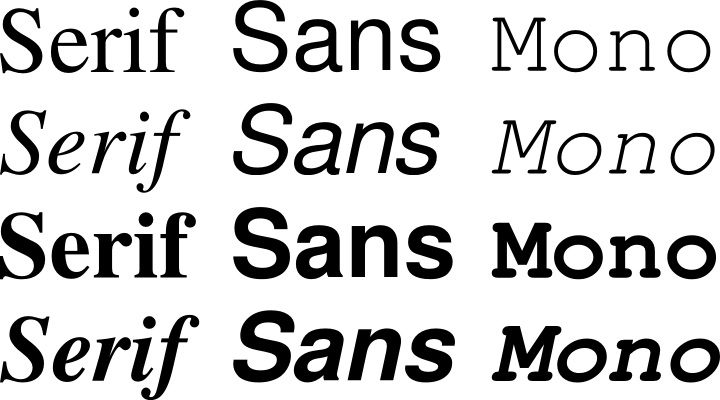

GNU FreeFont
Writing systems
- International Phonetic Alphabet
- Braille
- Cyrillic
- Greek
- Arabic
- Hebrew
- Thaana
- Syriac
- Ethiopian
- Armenian
- Georgian
- Devanagari
- Bengali
- Gujarati
- Gurmukhi
- Sinhala
- Tamil
- Malayalam
- Mongolian
- Tai Le
- Thai
- Cherokee
- Hanunóo
- Buginese
- Coptic
- Gothic
- Ugaritic
- Old Persian
- Phoenician
- Runic
Symbol ranges
- General punctuation
- Currencies
- Mathematics
- Dingbats
- Geometrical shapes
- Arrow drawing
- Box drawing
- Diacritical marks
- Western music
- Byzantine music
- Mah Jong tiles
- Dominoes
Gnu FreeFont is a free family of scalable outline fonts, suitable for general use on computers and for desktop publishing. It is Unicode-encoded for compatability with all modern operating systems.
The fonts are ready to use, downloadable in TrueType and OpenType formats.

Besides a full set of characters for writing systems based on the Latin alphabet, FreeFont contains large selection of characters from other writing systems some of which are hard to find elsewhere. These include the Unicode ranges for the writing systems listed here.
FreeFont also contains a large set of symbol characters, both technical and decorative. We are especially pleased with the Mathematical Operators range, with which most of the glyphs used in LaTeX can be displayed.